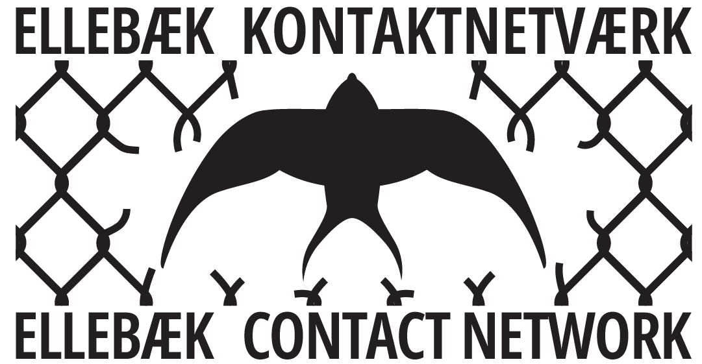

Voices Through the Fence is an ongoing publishing platform for drawings, notes, letters, and texts by persons who are currently, or have been, detained in Ellebæk deportation prison. Due to restrictions on basic means of communication, it is very difficult for people inside Ellebæk to get in touch with the outside world. Hoping to cut across Ellebæk’s dividing borders, this website/blog will be continuously updated with contributions.
Ellebæk is run by the agency Denmark’s Prisons (Danmarks Fængsler) and is located next to a military base near Allerød, Denmark.
Most detainees are held for a shorter period, while some are detained up to 18 months waiting for their deportation. Migration detention is a method used by the Danish state to pressure people to “collaborate” by agreeing to return “voluntarily”, yet even those who do so may still be kept incarcerated, left in limbo with little prospect of being released or deported.
Many of the persons detained in Ellebæk report chronic anxiety, fear, and anger. Many receive medication for depression and sleep deprivation, while access to healthcare is limited and communication to the outside world restricted.
This platform is edited and initiated by Ellebæk Contact Network, an activist collective visiting and systematically documenting conditions concerning Ellebæk.
Click to read more on the conditions inside Ellebæk
Projektet er støttet af FRi Puljen, som er en del af Fundamental Rights Initiative, et samarbejde mellem Globalt Fokus og Nyt Europa og medfinansieret af EU.